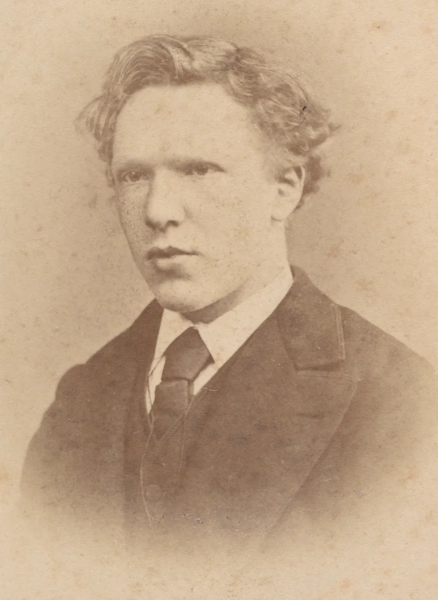
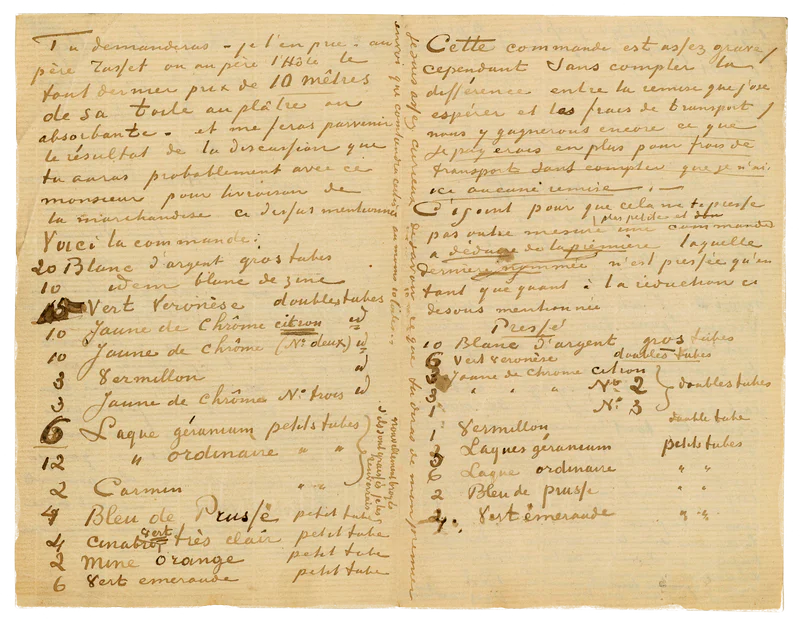

Vincent van Gogh, in full Vincent Willem van Gogh, (born March 30, 1853, Zundert, Netherlands—died July 29, 1890, Auvers-sur-Oise, near Paris, France), Dutch painter, generally considered the greatest after Rembrandt van Rijn, and one of the greatest of the Post-Impressionists. The striking colour, emphatic brushwork, and contoured forms of his work powerfully influenced the current of Expressionism in modern art. Van Gogh's art became astoundingly popular after his death, especially in the late 20th century, when his work sold for record-breaking sums at auctions around the world and was featured in blockbuster touring exhibitions. In part because of his extensive published letters, van Gogh has also been mythologized in the popular imagination as the quintessential tortured artist.
Early life
Van Gogh, the eldest of six children of a Protestant pastor, was born and reared in a small village in the Brabant region of the southern Netherlands. He was a quiet, self-contained youth, spending his free time wandering the countryside to observe nature. At 16 he was apprenticed to The Hague branch of the art dealers Goupil and Co., of which his uncle was a partner.
Van Gogh worked for Goupil in London from 1873 to May 1875 and in Paris from that date until April 1876. Daily contact with works of art aroused his artistic sensibility, and he soon formed a taste for Rembrandt, Frans Hals, and other Dutch masters, although his preference was for two contemporary French painters, Jean-François Millet and Camille Corot, whose influence was to last throughout his life. Van Gogh disliked art dealing. Moreover, his approach to life darkened when his love was rejected by a London girl in 1874. His burning desire for human affection thwarted, he became increasingly solitary. He worked as a language teacher and lay preacher in England and, in 1877, worked for a bookseller in Dordrecht, Netherlands. Impelled by a longing to serve humanity, he envisaged entering the ministry and took up theology; however, he abandoned this project in 1878 for short-term training as an evangelist in Brussels. A conflict with authority ensued when he disputed the orthodox doctrinal approach. Failing to get an appointment after three months, he left to do missionary work among the impoverished population of the Borinage, a coal-mining region in southwestern Belgium. There, in the winter of 1879-80, he experienced the first great spiritual crisis of his life. Living among the poor, he gave away all his worldly goods in an impassioned moment; he was thereupon dismissed by church authorities for a too-literal interpretation of Christian teaching.
Penniless and feeling that his faith was destroyed, he sank into despair and withdrew from everyone. “They think I'm a madman,” he told an acquaintance, “because I wanted to be a true Christian. They turned me out like a dog, saying that I was causing a scandal.” It was then that van Gogh began to draw seriously, thereby discovering in 1880 his true vocation as an artist. Van Gogh decided that his mission from then on would be to bring consolation to humanity through art. “I want to give the wretched a brotherly message,” he explained to his brother Theo. “When I sign [my paintings] 'Vincent,' it is as one of them.” This realization of his creative powers restored his self-confidence.
Legacy of Vincent van Gogh
Largely on the basis of the works of the last three years of his life, van Gogh is generally considered one of the greatest Dutch painters of all time. His work exerted a powerful influence on the development of much modern painting, in particular on the works of the Fauve painters, Chaim Soutine, and the German Expressionists. Yet of the more than 800 oil paintings and 700 drawings that constitute his life's work, he sold only one in his lifetime. Always desperately poor, he was sustained by his faith in the urgency of what he had to communicate and by the generosity of Theo, who believed in him implicitly. The letters that he wrote to Theo from 1872 onward, and to other friends, give such a vivid account of his aims and beliefs, his hopes and disappointments, and his fluctuating physical and mental state that they form a unique and touching biographical record that is also a great human document.
The name of van Gogh was virtually unknown when he killed himself: only one article about him had appeared during his lifetime. He had exhibited a few canvases at the Salon des Indépendants in Paris between 1888 and 1890 and in Brussels in 1890; both salons showed small commemorative groups of his work in 1891. One-man shows of his work did not occur until 1892.
Artwork
Starry Night

The Starry Night (Dutch: De sterrennacht) is an oil-on-canvas painting by the Dutch Post-Impressionist painter Vincent van Gogh. Painted in June 1889, it depicts the view from the east-facing window of his asylum room at Saint-Rémy-de-Provence, just before sunrise, with the addition of an imaginary village. It has been in the permanent collection of the Museum of Modern Art in New York City since 1941, acquired through the Lillie P. Bliss Bequest. Widely regarded as Van Gogh's magnum opus, The Starry Night is one of the most recognizable paintings in Western art
Sunflower

Sunflowers (original title, in French: Tournesols ) is the name of two series of still life paintings by the Dutch painter Vincent van Gogh . The first set, executed in Paris in 1887, depicts flowers on the ground, while the second set, executed a year later in Arles , features a bunch of sunflowers in a vase.